13. Heat Transfer#
Oct 22, 2026 | 10075 words | 67 min read
Chapter roadmap
Energy transfer can change a material’s temperature or its phase. This chapter connects those effects to the mechanisms that move energy between objects and their surroundings.
As you read, focus on three questions:
How do heat transfer and mechanical work change a system’s internal energy?
How can conservation of energy predict temperature changes and phase changes?
What controls the rates of conduction, convection, and radiation?
The examples at the ends of the sections apply these ideas to heating, cooling, insulation, and everyday energy balances.
Energy can exist in many forms including heat, which is often hidden. Heat exists when in transit and is transferred by several different methods. Heat transfer touches many aspects of our lives, where it explains the chill we feel on a clear breezy night, or why we need to allocate resources to manage it.
13.1. Heat#
Previously, we defined work as the product of force over a distance and that kinetic energy is the work done to bring an object to rest. We also showed that temperature is proportional to the (average) kinetic energy of atoms and molecules. We can say that a thermal system has a certain internal energy: its internal energy is higher if the temperature is higher.
If two objects at different temperatures are brought in contact with each other, energy is transmitted (i.e., flows from) the hotter to the cooler object until equilibrium is reached and the objects reach thermal equilibrium (i.e., they are at the same temperature). No work is done by either object because no force acts over a distance. The transfer of energy is caused by the temperature difference \((\Delta T)_i\) and ceases once the temperatures are equal, \((\Delta T)_f = 0\). These observations lead to the following definition of heat:
Heat is the spontaneous transfer of energy due to a temperature difference.
Heat is often confused with temperature, where we may say that the heat is unbearable when we mean that the temperature was high. Although these concepts are related, they describe different physical quantities.
Temperature is related to the average kinetic energy of the particles in a substance, whereas heat is energy transferred between objects because of a temperature difference.
When heat enters an object, it increases the object’s internal energy, which may cause its temperature to rise. We often associate heat with temperature because our sensation of warmth depends on both the temperature of our surroundings and the rate at which energy is transferred to or from our bodies.
Since heat is a form of energy transfer due to a temperature difference, it has the SI unit of joule (\(\rm J\)). The calorie (\(\rm cal\)) is a common unit of energy defined as the energy needed to change the temperature of \(1\ {\rm g}\) of water by \(1^\circ{\rm C}\). The most common unit of heat is the kilocalorie (\(\rm kcal\)), which is the energy needed to change the temperature of \(1\ {\rm kg}\) of water by \(1^\circ{\rm C}\). Food calories (given the notation of \(\rm Cal\); notice the capitalization) are actually kilocalories (\(1\ {\rm kcal} = 1000\ {\rm cal}\)).
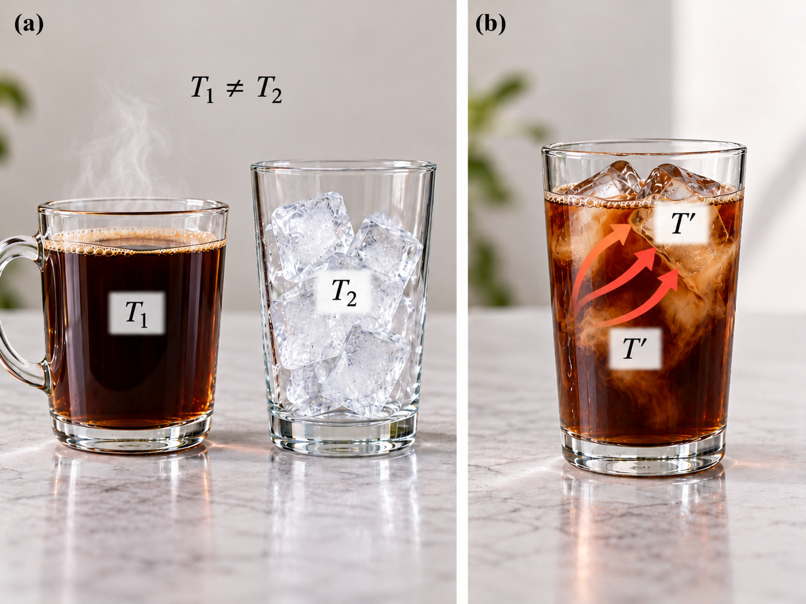
Fig. 13.1 Heat transfer and thermal equilibrium when making iced coffee. (a) Hot coffee at temperature \(T_1\) and ice at temperature \(T_2\) are initially separated, with \(T_1>T_2\). (b) When the ice is added to the coffee, thermal energy transfers from the warmer coffee to the colder ice, causing the coffee to cool and some of the ice to melt. Assuming negligible heat exchange with the surroundings, the mixture eventually reaches thermal equilibrium at a common temperature \(T'\), where no net heat transfer occurs between its components. Adapted from OpenStax, College Physics 2e, Figure 14.2.#
13.1.1. Mechanical Equivalent of Heat#
It is possible to change the temperature of a substance by doing work. Work can transfer energy into or out of a system. This realization helped establish that heat is a form of energy. James Prescott Joule performed many experiments to establish the mechanical equivalent of heat, or the work needed to produce the same effects as heat transfer. In terms of units used for these two terms, the best modern value for this equivalence is
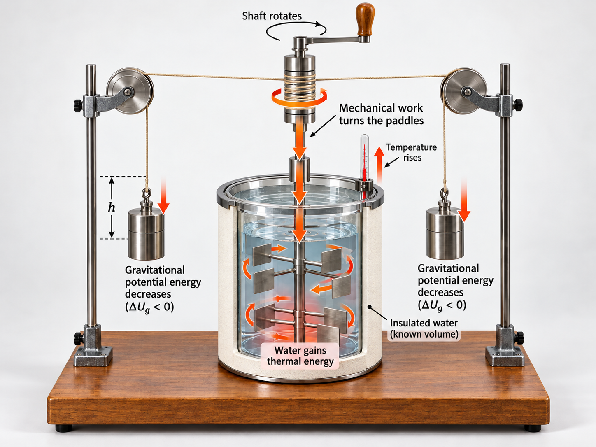
Fig. 13.2 Conversion of gravitational potential energy into thermal energy in Joule’s paddle-wheel experiment. As the suspended masses fall through a measured height \(h\), their gravitational potential energy decreases. The falling masses turn the shaft and paddles, so mechanical work is done on the water. This stirring transfers energy to the water, increasing its thermal energy and producing a measurable rise in temperature. The insulated container helps ensure that the energy transferred by the falling masses is primarily observed as heating of the known volume of water. Adapted from OpenStax, College Physics 2e.#
Blender, the Next Stove? (The Joule Experiment). This MIT educational video explores how mechanical work can increase the temperature of a substance using an ordinary kitchen blender. Like Joule’s paddle-wheel experiment, the rotating blades transfer mechanical energy to a fluid, increasing its internal energy.
The important connection is that a substance can become warmer through mechanical work without receiving energy by heat transfer from a hotter object. As you watch, focus on how the motion of the blades transfers energy to the fluid and how this illustrates the conservation of energy.
Figure 13.2 shows one of Joule’s most famous experimental setups for demonstrating the mechanical equivalent of heat. It demonstrated that work and heat can produce the same effects, and helped establish the principle of the conservation of energy.
Gravitational potential energy (\(\rm PE\)), or the work done by the gravitational force, is converted into kinetic energy \((\rm KE)\) of the paddlewheel. The viscosity and turbulence in the water raise its average kinetic energy, which produces a temperature increase.
Heat added or removed from a system changes its internal energy and thus, its temperature. Adding heat does not necessarily increase the temperature. For example, when ice melts it is due to a phase change and not the temperature. Work done on a system or by the system can also change the internal energy of the system.
Check Your Understanding: Can a Sample Reveal How Energy Entered?
The Problem
Two samples of the same substance each receive \(10\ {\rm kJ}\) of energy. One receives the energy by heat transfer, while work is done on the other. Can you identify the energy-transfer method by examining their final equilibrium properties? Assume identical initial states, the same final volume, and no other energy transfer.
Adapted from OpenStax, College Physics 2e, Check Your Understanding.
Show worked solution
The Conclusion
No. Under the stated conditions, both samples have the same increase in internal energy and the same final equilibrium state. Final temperature and other equilibrium properties do not record whether the energy arrived as heat or work. The distinction concerns the transfer process, so identifying it requires information about what happened during that process.
13.2. Temperature Change and Heat Capacity#
One effect of heat transfer is a temperature change, where we can easily observe that heating increases the temperature of a substance while cooling decreases it. We assume that there is no phase change and that no work is done on (or by) the system. Experiments show that the transferred heat depends on three factors:
the change in temperature,
the mass of the system, and
the substance and the phase of the substance.
The dependences on temperature change and mass are easily understood.
The (average) kinetic energy of an atom (or molecule) is proportional to the absolute temperature and the number of atoms (or molecules).
The transferred heat is equal to the change in the internal energy, which means that the heat is proportional to the mass of the substance.
The transferred heat also depends on the substance so that the heat necessary to raise the temperature is less for alcohol than for water. For the same substance, the transferred heat also depends on the phase.
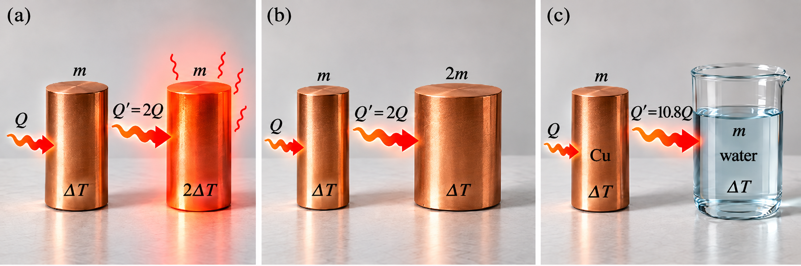
Fig. 13.3 Heat transfer depends on temperature change, mass, and material. In (a), two copper cylinders of equal mass \(m\) are compared. Producing a temperature change of \(2\Delta T\) requires twice as much heat transfer as producing a temperature change of \(\Delta T\). In (b), doubling the mass from \(m\) to \(2m\) while keeping the material the same requires twice as much heat transfer to produce the same temperature change \(\Delta T\). In (c), equal masses of copper and water undergo the same temperature change, but water requires much more heat transfer because its specific heat is larger. The arrows labeled \(Q\) and \(Q'\) emphasize how the required heat transfer changes in each case.#
Heat Transfer and Temperature Change
The quantitative relationship between heat transfer \(Q\) and temperature change \(\Delta T\) contains all three factors:
where \(m\) is the mass of the substance, and the symbol \(c\) denotes the specific heat that depends on the material and phase.
The specific heat \(c\) is a property of the substance, and its SI unit is \(\rm J/(kg\cdot K)\). Note that the unit used for \(\Delta T\) must match that given for the specific heat, where a conversion may be necessary. If heat transferred is measured in \(\rm kcal\), then the unit of specific heat can be converted so that the units are \(\rm kcal/(kg\cdot ^\circ{C})\).
Values of specific heat are empirically measured and must generally be referenced in tables because there is no simple way to calculate them from first principles. The temperature and volume dependence of the specific heat of most substances is weak. The specific heat of water is \(5\times\) that of glass and \(10\times\) that of iron, which means that it takes that much more heat to raise the temperature of water by the same amount. Water has one of the largest specific heats of any material, which is important for life as we know it on Earth.
Substance |
\(c\) (\({\rm J/(kg\cdot K)}\)) |
\(c\) (\({\rm kcal/(kg\cdot K)}\))\(^1\) |
|---|---|---|
Solids |
||
Aluminum |
900 |
0.215 |
Asbestos |
800 |
0.19 |
Concrete, granite (average) |
840 |
0.20 |
Copper |
387 |
0.0924 |
Glass |
840 |
0.20 |
Gold |
129 |
0.0308 |
Human body (average at \(310\ {\rm K}\)) |
3500 |
0.83 |
Ice (average, \(223\) to \(273\ {\rm K}\)) |
2090 |
0.50 |
Iron, steel |
452 |
0.108 |
Lead |
128 |
0.0305 |
Silver |
235 |
0.0562 |
Wood |
1700 |
0.4 |
Liquids |
||
Benzene |
1740 |
0.415 |
Ethanol |
2450 |
0.586 |
Glycerin |
2410 |
0.576 |
Mercury |
139 |
0.0333 |
Water (\(288.2\ {\rm K}\)) |
4186 |
1.000 |
Gases\(^2\) |
\(c_v\) (\(c_p\)) |
\(c_v\) (\(c_p\)) |
Air (dry) |
721 (1015) |
0.172 (0.242) |
Ammonia |
1670 (2190) |
0.399 (0.523) |
Carbon dioxide |
638 (833) |
0.152 (0.199) |
Nitrogen |
739 (1040) |
0.177 (0.248) |
Oxygen |
651 (913) |
0.156 (0.218) |
Steam (\(373\ {\rm K}\)) |
1520 (2020) |
0.363 (0.482) |
\(^1\) These numerical values are also identical when expressed in \({\rm cal/(g\cdot K)}\).
\(^2\) For gases, \(c_v\) represents the specific heat at constant volume, measured at approximately \(293.2\ {\rm K}\) and \(1.00\ {\rm atm}\) unless otherwise noted. Values in parentheses represent \(c_p\), the specific heat at constant pressure of \(1.00\ {\rm atm}\).
\(^3\) Values for solids and liquids are measured at constant volume and approximately \(298\ {\rm K}\) unless otherwise noted.
Adapted from OpenStax College Physics 2e, Table 14.1.
Note: The numerical value of specific heat is unchanged when replacing degrees Celsius with kelvins in the denominator because \(\Delta T=1\ {\rm K}\) corresponds to \(\Delta T=1^\circ{\rm C}\). Only the temperature scale’s zero point differs.
13.2.1. Example Problem: Heating Water in an Aluminum Pan#
Example Problem: Heating Water in an Aluminum Pan
The Problem
An aluminum pan of mass \(0.500\ {\rm kg}\) contains \(0.250\ {\rm L}\) of water. Both warm from \(20.0^\circ{\rm C}\) to \(80.0^\circ{\rm C}\). Find (a) the total heat required, (b) the percentage absorbed by the pan, and (c) the percentage absorbed by the water. Neglect heat lost to the surroundings. Use \(c_{\rm Al}=9.00\times10^2\ {\rm J/(kg\,K)}\), \(c_{\rm w}=4.19\times10^3\ {\rm J/(kg\,K)}\), and \(\rho_{\rm w}=1.00\ {\rm kg/L}\).
Adapted from OpenStax, College Physics 2e, Example 14.1.
Show worked solution
The Model
The pan and water form the system receiving energy from the stove. Each undergoes the same temperature increase without changing phase, so we calculate the energy absorbed by each material and add the contributions. Their shares of the total are determined by their heat capacities, which combine mass and specific heat. The volume of water must first be related to its mass through density.
The Math
(a) The water mass is \(m_{\rm w}=\rho_{\rm w}V_{\rm w}\). Applying the temperature-change relation to both materials gives the total heat
Factoring out the common temperature interval shows that the combined heat capacity controls the required energy:
(b) The pan’s percentage is its heat contribution divided by the total. The common temperature interval cancels, so
(c) The water receives the remaining share, which gives \(f_{\rm w}=100\%-f_{\rm Al}\). The specified density and volume give a water mass of \(0.250\ {\rm kg}\), and the temperature interval is \(60.0\ {\rm K}\). Evaluating the total and the two shares gives
The Conclusion
The required heat is (a) \(89.9\ {\rm kJ}\), with (b) \(30.1\%\) going into the pan and (c) \(69.9\%\) into the water. The percentages sum to the full input. Water absorbs more energy despite having half the pan’s mass because its specific heat is more than four times as large.
13.2.2. Example Problem: Warming Truck Brakes on a Descent#
Example Problem: Warming Truck Brakes on a Descent
The Problem
A truck of mass \(1.0\times10^4\ {\rm kg}\) descends through a vertical height of \(75\ {\rm m}\) at constant speed. Its brakes retain \(10\%\) of the lost gravitational potential energy. Find the temperature increase of \(1.0\times10^2\ {\rm kg}\) of brake material with average specific heat \(8.0\times10^2\ {\rm J/(kg\,K)}\). Use \(g=9.8\ {\rm m/s^2}\).
Adapted from OpenStax, College Physics 2e, Example 14.2.
Show worked solution
The Model
The truck’s constant speed means that its kinetic energy does not increase during the descent. Part of the decrease in gravitational potential energy remains as internal energy in the brakes. We use the stated retained fraction to find that contribution, then relate the brake material’s internal-energy increase to its temperature rise. Mechanical work supplies the energy; heat transfer from a hotter object is not required.
The Math
We denote the truck mass by \(M\), the brake mass by \(m\), and the retained fraction by \(f\). The positive energy retained in the brakes is
The brake material’s thermal response is described by \(\Delta U_{\rm brakes}=mc\Delta T\) within the constant-specific-heat approximation. Equating the two expressions and isolating the temperature change gives
The stated percentage corresponds to \(f=0.10\). The temperature rise is therefore
The Conclusion
The brakes warm by \(9.2\ {\rm K}\), equivalent to a \(9.2^\circ{\rm C}\) increase. The positive change is consistent with retaining mechanical energy. The modest rise reflects the assumption that only one-tenth of the lost potential energy remains in the brakes; retaining a larger fraction would produce a proportionally larger rise.
13.2.3. Example Problem: Cold Water in a Hot Pan#
Example Problem: Cold Water in a Hot Pan
The Problem
A \(0.500\ {\rm kg}\) aluminum pan initially at \(150^\circ{\rm C}\) receives \(0.250\ {\rm kg}\) of water at \(20.0^\circ{\rm C}\). The pan rests on an insulating pad. Find the final equilibrium temperature, assuming negligible evaporation and heat exchange with the surroundings. Use \(c_{\rm Al}=9.00\times10^2\ {\rm J/(kg\,K)}\) and \(c_{\rm w}=4.19\times10^3\ {\rm J/(kg\,K)}\).
Adapted from OpenStax, College Physics 2e, Example 14.3.
Show worked solution
The Model
The pan and water exchange energy with each other while their combined energy remains constant. The pan cools and the water warms until they share a common temperature. We take heat entering either object as positive, so the pan’s heat transfer is negative and the water’s is positive. A temperature between the two initial values is required for this model to be consistent.
The Math
The separate heat transfers follow from each object’s initial temperature and the common final temperature. Conservation of energy requires their sum to vanish:
Collecting the terms that contain the final temperature gives a heat-capacity-weighted average of the initial temperatures:
Celsius readings can be used in this weighted average because the weights sum to one, and temperature differences have the same size in kelvins and Celsius degrees. The stated masses give heat capacities of \(450\ {\rm J/K}\) for the pan and \(1.048\times10^3\ {\rm J/K}\) for the water, with one working digit retained for the latter. Evaluation using unrounded products gives
The Conclusion
The final temperature is approximately \(59.1^\circ{\rm C}\). It lies between the initial temperatures and closer to the water’s initial temperature because the water has the larger heat capacity. The result is below the boiling point, consistent with a final liquid state under the stipulated negligible-evaporation approximation.
Check Your Understanding: Equal Temperature Intervals
The Problem
A block requires \(25\ {\rm kJ}\) to warm from \(25^\circ{\rm C}\) to \(30^\circ{\rm C}\). How much heat is required to warm the same block from \(45^\circ{\rm C}\) to \(50^\circ{\rm C}\)? Assume its specific heat stays constant and no phase change occurs.
Adapted from OpenStax, College Physics 2e, Check Your Understanding.
Show worked solution
The Model
The block has the same mass and material in both processes. With constant specific heat, only the temperature interval determines whether the required heat differs. Comparing the two heat transfers allows the common mass and specific heat to cancel.
The Math
The heat-transfer relation applies to both intervals. Taking their ratio isolates the role of the temperature change:
Each interval is \(5\ {\rm K}\), so the ratio is unity. The required heat is
The Conclusion
The second warming requires \(25\ {\rm kJ}\). Both processes produce the same temperature increase in the same block, so the constant-specific-heat model predicts equal energy transfers. The higher starting temperature alone does not change this result.
13.3. Phase Change and Latent Heat#
Energy is required to melt a solid because the cohesive bonds between the molecules in the solid must be broken apart such that the molecules can move around in the liquid at comparable kinetic energies. Thus, there is no rise in temperature. Energy is also needed to vaporize a liquid because molecules in a liquid interact with each other via attractive forces. There is no temperature change until a phase change is complete.
The temperature of a cup of soda initially at \(0^\circ{\rm C}\) stays at \(0^\circ{\rm C}\) until all the ice has melted. Conversely, energy is released during freezing and condensation, usually in the form of thermal energy. Work is done by cohesive forces when molecules are brought together. The corresponding energy must be given off (dissipated) to allow them to stay together.
The energy involved in a phase change depends on two major factors:
the number of bonds (or force pairs), and
the strength of bonds (or force pairs).
The number of bonds is proportional to the number of molecules and thus, the mass of the sample. The strength of forces depends on the type of molecules. The heat transfer \(Q\) required to change the phase of a sample of mass \(m\) is given by:
where the latent heat of fusion \(L_{\rm f}\) and the latent heat of vaporization \(L_{\rm v}\) are material constants that are determined experimentally.
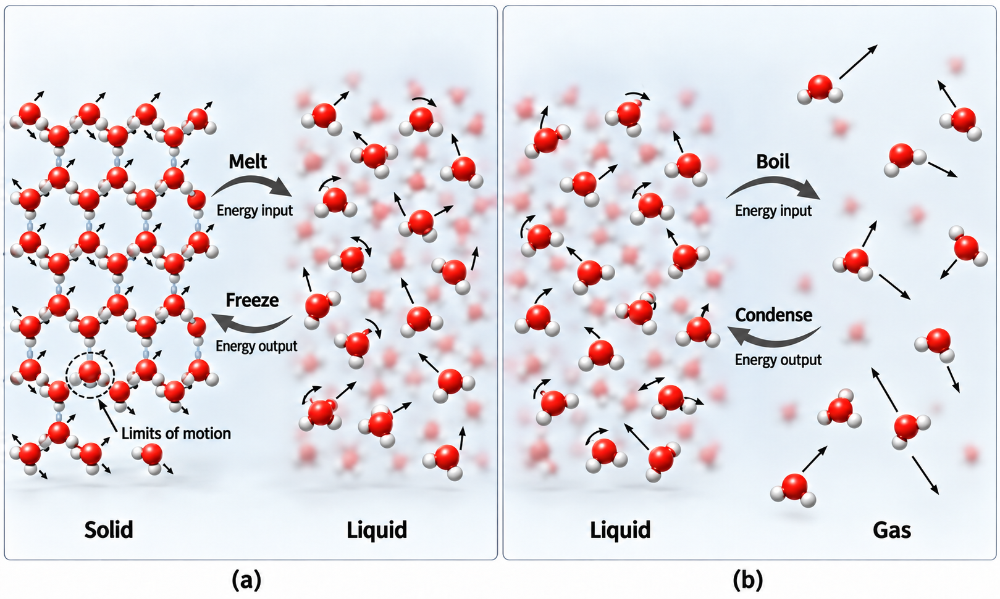
Fig. 13.4 Molecular view of phase changes in water. In (a), water molecules in the solid phase are arranged in an ordered structure and can only undergo limited motion about relatively fixed positions. When energy is added, the solid melts into a liquid, where the molecules remain close together but can move and slip past one another more freely. Removing energy from the liquid causes freezing. In (b), water molecules in the liquid phase are still close together but move randomly. Adding energy causes boiling, producing a gas in which the molecules are much farther apart and move independently through space. Removing energy from the gas causes condensation back to the liquid phase.#
Latent heat is measured in units of \(\rm kJ/kg\). Both latent heat coefficients (\(L_{\rm f}\) and \(L_{\rm v}\)) depend on the substance, particularly on the strength of its molecular forces. They are latent (or hidden) because in phase changes, energy enters or leaves a system without causing a temperature change in the system.
Substance |
Melting Point |
Melting Point |
\(L_f\) (\({\rm kJ/kg}\)) |
\(L_f\) (\({\rm kcal/kg}\)) |
|---|---|---|---|---|
Helium |
-269.7 |
3.5 |
5.23 |
1.25 |
Hydrogen |
-259.3 |
13.9 |
58.6 |
14.0 |
Nitrogen |
-210.0 |
63.2 |
25.5 |
6.09 |
Oxygen |
-218.8 |
54.4 |
13.8 |
3.30 |
Ethanol |
-114 |
159 |
104 |
24.9 |
Ammonia |
-75 |
198 |
— |
108 |
Mercury |
-38.9 |
234.3 |
11.8 |
2.82 |
Water |
0.00 |
273.15 |
334 |
79.8 |
Sulfur |
119 |
392 |
38.1 |
9.10 |
Lead |
327 |
600 |
24.5 |
5.85 |
Antimony |
631 |
904 |
165 |
39.4 |
Aluminum |
660 |
933 |
380 |
90 |
Silver |
961 |
1234 |
88.3 |
21.1 |
Gold |
1063 |
1336 |
64.5 |
15.4 |
Copper |
1083 |
1356 |
134 |
32.0 |
Uranium |
1133 |
1406 |
84 |
20 |
Tungsten |
3410 |
3683 |
184 |
44 |
Notes: Values are given at the normal melting point under standard atmospheric pressure (\(1\ {\rm atm}\)), unless otherwise noted.
Substance |
Boiling Point |
Boiling Point |
\(L_v\) (\({\rm kJ/kg}\)) |
\(L_v\) (\({\rm kcal/kg}\)) |
|---|---|---|---|---|
Helium |
-268.9 |
4.3 |
20.9 |
4.99 |
Hydrogen |
-252.9 |
20.3 |
452 |
108 |
Nitrogen |
-195.8 |
77.4 |
201 |
48.0 |
Oxygen |
-183.0 |
90.2 |
213 |
50.9 |
Ethanol |
78.3 |
351.5 |
854 |
204 |
Ammonia |
-33.4 |
239.8 |
1370 |
327 |
Mercury |
357 |
630 |
272 |
65.0 |
Water |
100.0 |
373.2 |
2256 |
540 |
Water |
37.0 |
310.2 |
2430 |
580 |
Sulfur |
444.6 |
717.8 |
326 |
77.9 |
Lead |
1750 |
2023 |
871 |
208 |
Antimony |
1440 |
1713 |
561 |
134 |
Aluminum |
2450 |
2723 |
11400 |
2720 |
Silver |
2193 |
2466 |
2336 |
558 |
Gold |
2660 |
2933 |
1578 |
377 |
Copper |
2595 |
2868 |
5069 |
1211 |
Uranium |
3900 |
4173 |
1900 |
454 |
Tungsten |
5900 |
6173 |
4810 |
1150 |
Notes: Values are given at the normal boiling point under standard atmospheric pressure (\(1\ {\rm atm}\)), unless otherwise noted.
\(^1\) At \(37.0^\circ{\rm C}\) (body temperature), the latent heat of vaporization of water is \(2430\ {\rm kJ/kg}\) or \(580\ {\rm kcal/kg}\). This represents evaporation below the normal boiling point.
Adapted from OpenStax College Physics 2e, Table 14.2: Heats of Fusion and Vaporization.
How much energy is needed to melt a kilogram of ice at \(0^\circ{C}\) to produce a kilogram of water at \(0^\circ{\rm C}\)?
We can use the equations for the heat transfer \(Q\) in terms of the mass and latent heat of water. Thus we find that
is the energy needed to melt a kilogram of ice. This is a lot of energy as it represents the same amount of energy needed to raise the temperature of \(1\ {\rm kg}\) of liquid water from \(0^\circ{\rm C}\) to \(79.8^\circ{\rm C}\).
Even more energy is required to vaporize water. It would take \(2256\ {\rm kJ}\) to change \(1\ {\rm kg}\) of liquid water at the boiling point (\(100^\circ{\rm C}\) at \(1\ {\rm atm}\)) to steam (or water vapor).
Phase changes can have a tremendous stabilizing effect even on temperatures that are not near the melting and boiling point. Evaporation and condensation (conversion of a gas into a liquid state) occur even at temperatures below the boiling point. Consider that the air temperatures in humid climates
rarely go above \(35^\circ{\rm C}\), which is because most heat transfer goes into evaporating water into the air.
rarely fall below the dew point because enormous heat is released when water vapor condenses.
We can examine the effects of phase change more precisely by considering adding heat into a sample of ice at \(-20^\circ{\rm C}\).
The temperature of the ice rises linearly, absorbing heat at a constant rate of \(0.5\ {\rm kcal/(kg\cdot ^\circ{\rm C})}\) (see Table 13.1) until it reaches \(0^\circ{\rm C}\).
Once at \(0^\circ{\rm C}\), the ice begins to melt until all the ice has melted, absorbing \(79.8\ {\rm kcal/kg}\) of heat (see Table 13.2). The temperature remains constant at \(0^\circ{\rm C}\) during this phase change.
Once all the ice has melted, the temperature of the liquid water rises, absorbing heat at a new constant rate of \(1.00\ {\rm kcal/(kg\cdot ^\circ{C})}\).
At \(100^\circ{\rm C}\), the water begins to boil and the temperature again remains constant while the water absorbs \(540\ {\rm kcal/kg}\) (see Table 13.3) of heat during this phase change.
When all the liquid has become steam vapor, the temperature rises again, absorbing heat at a rate of \(0.482\ {\rm kcal/(kg\cdot ^\circ{\rm C})}\).
Fig. 13.5 Heating curve of water and changes in molecular behavior. As energy is added to ice initially at \(-20^\circ{\rm C}\), its temperature rises until it reaches the melting point at \(0^\circ{\rm C}\). During melting, the temperature remains constant while the added energy increases the intermolecular potential energy as the solid structure breaks down. Once all the ice has melted, the liquid water warms to \(100^\circ{\rm C}\), where vaporization begins. The temperature again remains constant as energy separates the molecules into the gas phase. After vaporization is complete, additional energy raises the temperature of the steam. The horizontal sections of the graph illustrate the energy required for phase changes, with vaporization requiring substantially more energy than melting. Adapted from OpenStax, College Physics 2e, Figure 14.8.#
Water can evaporate at temperatures below the boiling point. More energy is required than at the boiling point because there is less energy available from random motions. For example, at body temperature, perspiration from skin requires a heat input of \(2428\ {\rm kJ/kg}\), which is about \(10\%\) higher than the latent heat of vaporization at \(100^\circ{\rm C}\). This heat comes from the skin, and thus provides an effective cooling mechanism in hot weather. High humidity inhibits evaporation, which inhibits the body from cooling. We feel that the temperature might rise, but unevaporated sweat still exists on your brow.
Vaporization and condensation are opposite processes that transfer energy between a substance and its surroundings. During vaporization, a liquid absorbs energy from its surroundings to become a gas, which can cause the surroundings to cool. During condensation, a gas releases energy to its surroundings as it becomes a liquid, which can cause the surroundings to warm.
For example, water vapor in the air condenses when it comes into contact with a cold glass. Although the glass is initially cold, the condensation process releases energy to the glass, warming it slightly. The amount of energy released during condensation is equal to the energy required for vaporization of the same mass of the substance. The magnitude of this energy transfer is \(Q=mL_v,\) where \(m\) is the mass undergoing the phase change and \(L_v\) is the latent heat of vaporization.
Sublimation is the transition from the solid to vapor phase. For example, snow or ice can disappear without a trace of liquid water when in the right environment. The reverse is also true: Frost can form on very cold windows without going through the liquid stage.
A popular effect is the making of “smoke” or “fog” from dry ice, which is solid carbon dioxide. Sublimation occurs because the equilibrium vapor pressure of solids is not zero. Some air fresheners use the sublimation of a solid to inject a perfume into the room.
All phase transitions involve heat transfer. In the case of direct solid-vapor transitions, the energy required is given by
where \(L_{\rm s}\) is the latent heat of sublimation and is the energy required to change \(1\ {\rm kg}\) of a substance from the solid phase to the vapor phase. The value of \(L_{\rm s}\) depends on the substance. Sublimation requires energy input, so that dry ice is an effective coolant, whereas the reverse process (i.e., frosting) releases energy.
Problem-Solving Strategy: Heat Transfer
Identify what is happening. Determine which objects are heating up, cooling down, melting, freezing, or changing phase in another way. Remember that heat flows from warmer objects to cooler objects.
List the knowns and unknowns. Write down the given masses, temperatures, specific heats, and latent heats. Identify what the problem asks you to find.
Choose the appropriate equation.
Temperature change: Use \(Q = mc\Delta T\).
Phase change: Use \(Q = mL\).
Multiple objects: If no energy escapes to the surroundings, the heat lost by warmer objects equals the heat gained by cooler objects.
Solve the problem. Rearrange the equations to isolate the unknown before substituting numerical values. If the process involves both temperature and phase changes, solve each stage separately.
Check your answer. Make sure the units are correct and the result is reasonable. Check whether the final temperature crosses a melting or boiling point, which would require an additional phase-change calculation.
13.3.1. Example Problem: Cooling Soda with Ice#
Example Problem: Cooling Soda with Ice
The Problem
Three ice cubes, each of mass \(6.0\ {\rm g}\) and initially at \(0^\circ{\rm C}\), are added to \(0.25\ {\rm kg}\) of soda at \(20^\circ{\rm C}\) in a foam cup. Find the final temperature. Treat the soda as water, neglect the cup’s heat capacity and external heat exchange, and use \(c_{\rm w}=4.2\times10^3\ {\rm J/(kg\,K)}\) and \(L_{\rm f}=3.3\times10^5\ {\rm J/kg}\). Check that all the ice melts.
Adapted from OpenStax, College Physics 2e, Example 14.4.
Show worked solution
The Model
Energy released by the cooling soda must first melt the ice and then warm the resulting liquid water. We begin by assuming all the ice melts and solve the energy balance for a common final temperature. A result above the melting point confirms that enough energy is available to complete melting. The ice begins at its melting point, so no initial warming of solid ice is needed.
The Math
We denote the soda mass by \(m_{\rm s}\), the total ice mass by \(m_{\rm i}\), and the melting temperature by \(T_{\rm m}\). The soda’s energy loss equals the energy required for melting plus the warming of the meltwater:
Solving for the final temperature relative to the melting point gives
The numerator is the energy available after melting if the soda cools to the melting point. It must be positive for all the ice to melt and the mixture to warm above that point. The three cubes have a combined mass of \(0.018\ {\rm kg}\), so
The Conclusion
The final temperature is approximately \(13^\circ{\rm C}\). It is above the melting point, so the assumption that all the ice melts is consistent with the energy balance. A relatively small ice mass produces noticeable cooling because melting requires substantial energy in addition to the energy needed to warm the meltwater.
Check Your Understanding: Snow above the Freezing Temperature
The Problem
Why can snow remain on a mountain slope when daytime air temperatures rise above freezing?
Adapted from OpenStax, College Physics 2e, Check Your Understanding.
Show worked solution
The Conclusion
Snow must absorb enough energy to melt, even after it reaches its melting temperature. Warmer air can supply that energy only at a finite rate, and the large latent heat of fusion allows snow to persist while melting proceeds. Shading, overnight cooling, and the depth of the snowpack can further slow its disappearance. Air temperature above freezing therefore does not imply that all the snow melts immediately.
13.4. Heat Transfer Methods#
Whenever there is a temperature difference, heat transfer occurs. Heat transfer may occur rapidly (e.g., a cooking pan) or slowly (e.g., walls of an insulated ice chest). We control rates of heat transfer by
choosing materials (e.g., wool clothing in the winter),
controlling air movement (e.g., use of weather stripping around doors), or
choice of color (e.g., a white roof to reflect summer sunlight).
Many processes involve heat transfer, where each process involving heat transfer takes place by only three methods:
Conduction is heat transfer through stationary matter by physical contact. Heat transferred between the electric burner and the bottom of a pan is transferred by conduction.
Convection is the heat transfer by the macroscopic movement of a fluid. This type of transfer takes place in a forced-air furnace and in weather systems.
Radiation is the heat transfer that occurs when microwaves, infrared radiation, visible light, or another form of electromagnetic radiation is emitted or absorbed.
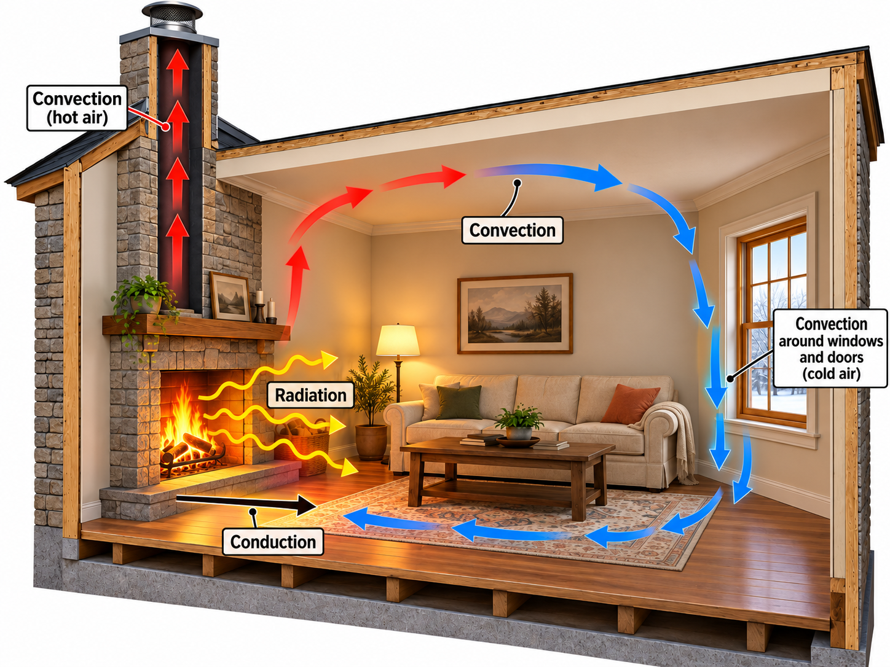
Fig. 13.6 Heat transfer by conduction, convection, and radiation in a room heated by a fireplace. Thermal radiation (yellow arrows) transfers energy directly from the fire to objects throughout the room without requiring a material medium. Conduction (black arrow) transfers energy through solid materials, such as the hearth and surrounding floor. Convection (red and blue arrows) transfers energy through the movement of air. Warm air rises near the fireplace and circulates through the room, while cooler air near the window sinks and moves along the floor toward the fireplace. Hot combustion gases also rise through the chimney, carrying energy out of the house. Adapted from OpenStax, College Physics 2e, Figure 14.12.#
Check Your Understanding: Recognizing the Three Transfer Mechanisms
The Problem
Give an everyday example of conduction, convection, and radiation that differs from the examples used in the main text. Explain the energy-transfer mechanism in each case.
Adapted from OpenStax, College Physics 2e, Check Your Understanding.
Show worked solution
The Conclusion
A metal spoon warms when its lower end is left in hot soup because energy travels through the metal by conduction. Water circulating through a household radiator carries energy from the boiler by convection. Sunlight warms a parked bicycle seat through absorption of electromagnetic radiation. More than one mechanism can operate in a real setting, but each example identifies the particular transfer being described.
13.5. Conduction#
Your feet feel cold as you walk barefoot across the living room carpet in your cold house and then step onto the kitchen tile floor. The carpet and the tile floor are both at the same temperature. The different sensation you feel is explained by the different rates of heat transfer: the heat loss during the same time interval is greater for skin in contact with the tiles than with the carpet, so the temperature drop is greater on the tiles.
Some materials conduct thermal energy faster than others. Good conductors of electricity (e.g., metals) are also good heat conductors, whereas insulators of electricity (e.g., wood, plastic, and rubber) are poor heat conductors.
The (average) kinetic energy of a molecule in a hot body is higher than in a colder body. If two molecules collide, an energy transfer between molecules occurs from the higher kinetic energy to the lower kinetic energy molecule. The cumulative effect from all collisions results in a net flux of heat from the hot body to the cold body. The heat flux thus depends on the temperature difference:
You get a more severe burn from boiling water than hot tap water because this temperature difference (or gradient) is larger. Conversely, if the temperatures are the same, the net heat transfer falls to zero and equilibrium is achieved. Since the number of collisions possible increases with increasing area, heat conduction depends on the cross-sectional area. If you touch a cold wall with your palm, your hand cools faster than if you just touch it with your fingertip.
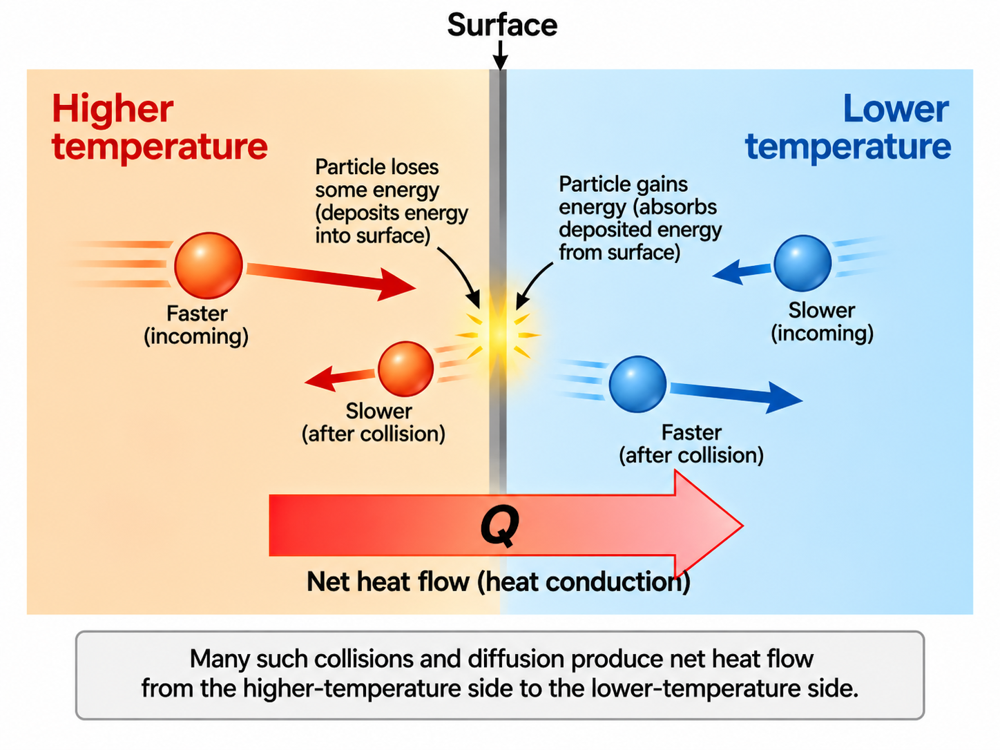
Fig. 13.7 Heat conduction through microscopic particle collisions. Particles in the higher-temperature region have greater average kinetic energy than those in the lower-temperature region. When a faster-moving particle strikes the boundary, it can transfer some of its kinetic energy to particles at the surface and rebound with a lower speed. Conversely, a slower-moving particle approaching from the cooler region can gain kinetic energy through interactions at the surface and rebound with a greater speed. The lengths of the smaller arrows represent the relative particle speeds before and after each collision. Although individual collisions can transfer energy in either direction, the combined effect of many collisions produces a net transfer of thermal energy \(Q\) from the higher-temperature region to the lower-temperature region. Adapted from OpenStax, College Physics 2e, Figure 14.14.#
The thickness of the material through which heat transfers also affects the mechanism of conduction. Consider a slab of material with different temperatures on either side. Suppose that \(T_2 > T_1\), so that heat is transferred from left to right. Heat transfer from the left side to the right side is accomplished by a series of molecular collisions. The thicker the material, the more time it takes to transfer the same amount of heat. This model explains why thick clothing is warmer than thin clothing in winters.
The heat transfer rate depends on the material properties described by the coefficient of thermal conductivity. The rate of conductive heat transfer through a slab of material is given by
where \(Q/t\) is the rate of heat transfer in watts (or \(\rm kcal/s\)), \(k\) is the thermal conductivity of the material, \(A\) and \(d\) are its surface area and thickness, and \(T_2-T_1\) is the temperature difference across the slab.
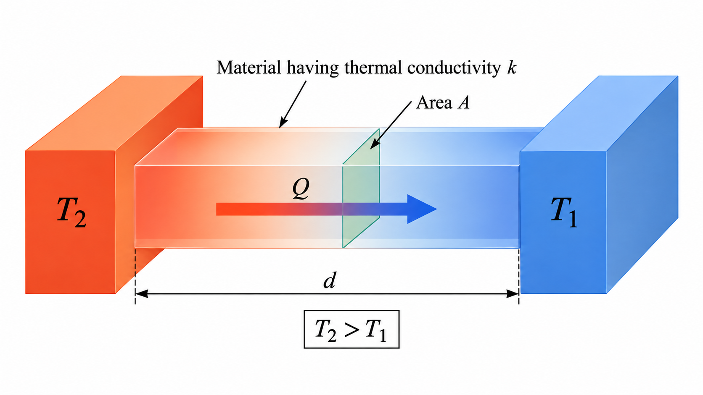
Fig. 13.8 Heat conduction through a material between two temperatures. A material with thermal conductivity \(k\), cross-sectional area \(A\), and thickness \(d\) connects two surfaces maintained at temperatures \(T_2\) and \(T_1\), where \(T_2>T_1\). Thermal energy flows from the higher-temperature surface to the lower-temperature surface through conduction. The rate of heat transfer increases with the thermal conductivity, cross-sectional area, and temperature difference, but decreases as the thickness \(d\) increases. Adapted from OpenStax, College Physics 2e, Section 14.5.#
A combination of material and thickness is necessary to develop good insulators, where a smaller conductivity \(k\) and larger thickness \(d\) are better. The ratio \(d/k\) will be large for a good insulator, where the ratio is called the R factor. The rate of conductive heat transfer is inversely proportional to \(R\). The \(R\) factor is used most commonly for household insulation (in the attic and walls) and refrigerators.
Substance |
Thermal Conductivity |
|---|---|
Silver |
420 |
Copper |
390 |
Gold |
318 |
Aluminum |
220 |
Iron (steel) |
80 |
Stainless steel |
14 |
Ice |
2.2 |
Glass (average) |
0.84 |
Concrete or brick |
0.84 |
Water |
0.60 |
Fatty tissue (without blood) |
0.20 |
Asbestos |
0.16 |
Plasterboard |
0.16 |
Wood |
0.08–0.16 |
Snow (dry) |
0.10 |
Cork |
0.042 |
Glass wool |
0.042 |
Wool |
0.040 |
Down feathers |
0.025 |
Air |
0.023 |
Polystyrene foam (Styrofoam) |
0.034 |
Adapted from OpenStax, College Physics 2e, Table 14.3. OpenStax lists \(0.010\ {\rm W/(m\cdot K)}\) for Styrofoam. The updated value of \(0.034\ {\rm W/(m\cdot K)}\) is representative of expanded polystyrene insulation at \(0^\circ{\rm C}\), based on FAO thermal insulation data.
13.5.1. Example Problem: Ice Melting in an Insulated Box#
Example Problem: Ice Melting in an Insulated Box
The Problem
An expanded-polystyrene ice box has total wall area \(0.950\ {\rm m^2}\) and average wall thickness \(2.50\ {\rm cm}\). Its contents remain at \(0^\circ{\rm C}\) while the surrounding car trunk remains at \(35.0^\circ{\rm C}\). How much ice melts in one day because of conduction through the walls? Use the chapter’s updated conductivity \(k=0.034\ {\rm W/(m\,K)}\) and \(L_{\rm f}=3.3\times10^5\ {\rm J/kg}\). Assume enough ice remains to maintain the interior temperature throughout the day.
Adapted from OpenStax, College Physics 2e, Example 14.5.
Show worked solution
The Model
We approximate the walls as a uniform slab with a steady temperature difference across it. Energy conducted into the box goes into melting ice while the contents remain at the melting point. Multiplying the conduction rate by the elapsed time gives the incoming energy, which determines the melted mass. We neglect air leakage, openings, and additional energy needed to cool warm beverages.
The Math
The steady conduction rate depends on wall area, thickness, conductivity, and the temperature difference. The energy entering over time \(t\) is therefore
Melting requires energy \(Q=mL_{\rm f}\). Combining the two relations and isolating the melted mass gives
The wall thickness is \(0.0250\ {\rm m}\), the temperature difference is \(35.0\ {\rm K}\), and one day is \(86{,}400\ {\rm s}\). Substitution into the combined expression gives
The Conclusion
Approximately \(12\ {\rm kg}\) of ice melts in one day under these steady conditions. The large mass is consistent with continuous heat gain across nearly a square meter of wall for a full day. If less ice is initially present, it melts sooner and the interior warms, so this constant-temperature model cannot be extended through the entire day. The answer uses the updated conductivity in this chapter rather than OpenStax’s lower value.
13.5.2. Example Problem: Temperature Difference across a Pan Bottom#
Example Problem: Temperature Difference across a Pan Bottom
The Problem
Water boils in an aluminum pan whose bottom is \(0.800\ {\rm cm}\) thick and \(14.0\ {\rm cm}\) in diameter. Water evaporates at \(1.00\ {\rm g/s}\). Find the temperature difference between the lower and upper faces of the pan bottom. Assume all energy conducted through the bottom vaporizes water, and use \(k=2.20\times10^2\ {\rm W/(m\,K)}\) and \(L_{\rm v}=2.26\times10^6\ {\rm J/kg}\).
Adapted from OpenStax, College Physics 2e, Example 14.6.
Show worked solution
The Model
The boiling water remains at a nearly constant temperature while energy supplies its phase change. The evaporation rate determines the required energy-transfer rate. In steady operation, the same rate passes through the aluminum bottom by conduction. We use the circular bottom area and solve for the face-to-face temperature difference, taking the lower face to be hotter.
The Math
We denote the mass evaporation rate by \(\dot m\). Vaporizing each unit of mass requires the latent heat, so the energy-transfer rate is
The circular bottom has area \(A=\pi D^2/4\), where \(D\) is its diameter. Equating the conduction rate to the vaporization rate and solving for the temperature difference gives
The evaporation rate is \(1.00\times10^{-3}\ {\rm kg/s}\), the thickness is \(0.00800\ {\rm m}\), and the diameter is \(0.140\ {\rm m}\). The temperature difference is therefore
The Conclusion
The lower face of the pan bottom is \(5.34\ {\rm K}\) warmer than the upper face. A small difference can sustain substantial energy transfer because aluminum conducts heat well and the bottom is thin. This is the temperature difference across the aluminum itself; it does not include any additional difference across the burner–pan contact.
Check Your Understanding: Doubling a Conducting Slab
The Problem
How does the steady conduction rate change when every linear dimension of a slab is doubled? Keep the material and the temperature difference between its faces unchanged.
Adapted from OpenStax, College Physics 2e, Check Your Understanding.
Show worked solution
The Model
Uniformly scaling the slab changes both the area available for heat flow and the distance through which energy must travel. We compare the new and original conduction rates so that the unchanged material property and temperature difference cancel. The area grows in two dimensions, while thickness grows in only one.
The Math
We denote the steady conduction rate by \(H=Q/t\). The ratio of the two rates follows from the slab conduction law:
Doubling both transverse dimensions multiplies area by four, while the thickness doubles. Substitution of these exact geometric scale factors gives
The Conclusion
The conduction rate doubles. The larger cross-sectional area increases the rate by a factor of four, while the doubled thickness reduces it by a factor of two. Their combined effect is a factor of two, so considering thickness alone would give the wrong prediction.
13.6. Convection#
Convection is driven by large-scale flow of matter. In the case of Earth’s atmosphere, the circulation is caused by the flow of hot air from the tropics to the poles and the flow of cold air from the poles toward the tropics (i.e., Hadley cells). Car engines are kept cool by the flow of water in the cooling system, where a water pump maintains the flow of cool water.
While convection is usually a more complicated process than conduction, we can describe convection and do some straightforward, realistic calculations of its effects. Natural convection is driven by buoyant forces, where hot air rises because density decreases as temperature increases.
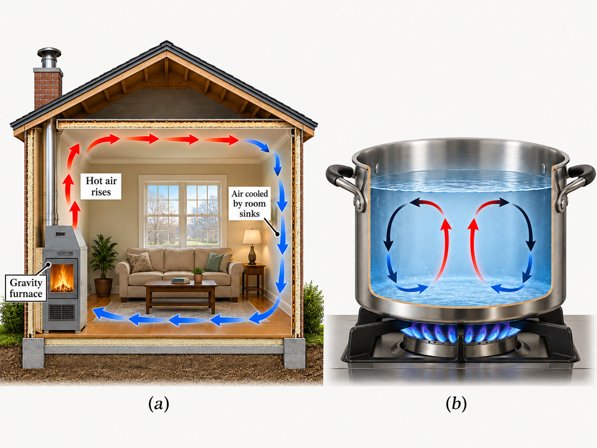
Fig. 13.9 Natural convection in air and water. (a) A gravity furnace heats the surrounding air, causing it to expand, become less dense, and rise toward the ceiling. As the warm air circulates through the room, it transfers energy to the surroundings, cools, and becomes denser. The cooler air sinks and flows along the floor toward the furnace, completing the convection cycle. (b) Water heated from below behaves similarly. Warmer, less-dense water rises from the heated region near the bottom of the pot, while cooler, denser water sinks along the sides. These circulating currents transfer thermal energy throughout the fluid without requiring a pump or fan. Adapted from OpenStax, College Physics 2e, Figure 14.17.#
A cold wind is much more chilling than still cold air because convection combines with conduction in the body to increase the rate at which energy is transferred away from the body. Wind-chill factors are approximated as the temperature of still air that produces the same rate of cooling as air of a given temperature and speed. For example, a \(15\ {\rm m/s}\) wind at \(0^\circ{\rm C}\) has the chilling equivalent of still air at about \(-18^\circ{\rm C}\).
Air Temperature |
2 m/s |
5 m/s |
10 m/s |
15 m/s |
20 m/s |
|---|---|---|---|---|---|
5 |
3 |
−1 |
−8 |
−10 |
−12 |
2 |
0 |
−7 |
−12 |
−16 |
−18 |
0 |
−2 |
−9 |
−15 |
−18 |
−20 |
−5 |
−7 |
−15 |
−22 |
−26 |
−29 |
−10 |
−12 |
−21 |
−29 |
−34 |
−36 |
−20 |
−23 |
−34 |
−44 |
−50 |
−52 |
−40 |
−44 |
−59 |
−73 |
−82 |
−84 |
Adapted from OpenStax, College Physics 2e, Table 14.4.
Although air can transfer heat rapidly by convection, it is a poor conductor and thus a good insulator. The amount of available space for airflow determines whether air acts as an insulator or conductor. The space inside and outside walls of a house is about \(9\ {\rm cm}\) (\(3.5\ {\rm in}\)), which is large enough for convection to work effectively. The addition of wall insulation prevents airflow, so heat loss (or gain) is decreased.
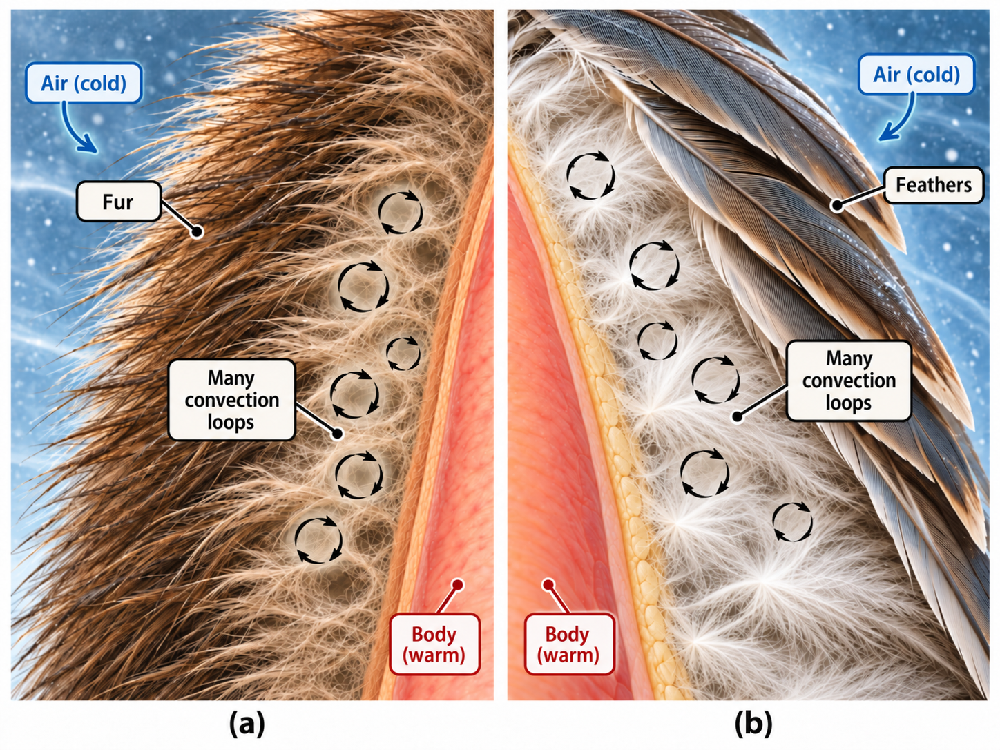
Fig. 13.10 Thermal insulation provided by fur and feathers. (a) Mammalian fur traps pockets of air between the warm body and the colder surroundings, reducing the transfer of thermal energy. (b) Ducks achieve a similar insulating effect using overlapping outer feathers and a layer of fluffy down that traps air close to the body. In both cases, the trapped air is a poor thermal conductor, while the small spaces between hairs or feathers restrict air circulation and reduce heat transfer by convection. The circular arrows represent the limited motion of air within these pockets. Adapted from OpenStax, College Physics 2e, Section 14.6: Convection.#
The gap between the two panes of a double-pane window is about \(1\ {\rm cm}\), which prevents convection and takes advantage of air’s low conductivity to prevent further loss. Fur, fiber, and fiberglass also take advantage of the low conductivity of air by trapping air in small spaces that don’t support convection.
Convection accompanied by a phase change allows us to cool off by sweating, even if the temperature of the surrounding air exceeds body temperature. Heat from the skin is required for sweat to evaporate from the skin, but without air flow, the air becomes saturated and evaporation stops. Air flow caused by convection replaces the saturated air by dry air and evaporation continues.
When water evaporates from the oceans, heat is removed from the ocean. If the water vapor condenses in liquid droplets as clouds form, then heat is released in the atmosphere. There is an overall transfer of heat from the ocean to the atmosphere. This process drives thunderheads, which are those great cumulus clouds that rise up to \(20\ {\rm km}\) into the stratosphere.
Water vapor carried by convection condenses and releases tremendous amounts of energy. This energy causes the air to expand and rise, where it is much colder. More condensation occurs in these colder regions, which drives the cloud even higher. This is a positive feedback, since the process reinforces and accelerates itself.
13.6.1. Example Problem: Heating Replacement Air in a House#
Example Problem: Heating Replacement Air in a House
The Problem
A house has interior dimensions \(12.0\ {\rm m}\times18.0\ {\rm m}\times3.00\ {\rm m}\). Its air is completely replaced every \(30.0\ {\rm min}\). Find the average power needed to warm the incoming air by \(10.0\ {\rm K}\). Use an air density of \(1.29\ {\rm kg/m^3}\) and \(c_p=1.00\times10^3\ {\rm J/(kg\,K)}\), and neglect other energy losses.
Adapted from OpenStax, College Physics 2e, Example 14.7.
Show worked solution
The Model
The replacement air carries energy out of the house as warm indoor air leaves and colder air enters. We model one complete air replacement over the stated time interval. Density converts the house volume to an air mass, and the specific heat at constant pressure describes warming that air at approximately atmospheric pressure. Dividing the required energy by the replacement time gives the average heating power.
The Math
The house volume is \(V=\ell w h\), and the mass of air replaced is \(m=\rho V\). The energy needed to warm one replacement volume is
The average power is the energy divided by the replacement time. This gives the combined expression
The replacement interval is \(1.80\times10^3\ {\rm s}\). Evaluating the power directly gives
The Conclusion
The required average heating power is \(4.64\ {\rm kW}\). This is a substantial heating load, which is reasonable because a large volume of air is replaced twice per hour. Slower air replacement would reduce this contribution proportionally, while wall conduction and other losses would add to the total heating requirement.
13.6.2. Example Problem: Cooling by Evaporation#
Example Problem: Cooling by Evaporation
The Problem
A resting person produces thermal energy at approximately \(1.2\times10^2\ {\rm W}\). At what rate must water evaporate to remove all this energy if other energy-transfer mechanisms are negligible? Use \(L_{\rm v}=2.4\times10^6\ {\rm J/kg}\) for water near body temperature. Express the result in grams per minute.
Adapted from OpenStax, College Physics 2e, Example 14.8.
Show worked solution
The Model
We balance the body’s steady energy production against energy removed by evaporation. Each unit of evaporated mass carries away an amount set by the latent heat. The required rate is the rate of actual evaporation, which can differ from the rate of sweat production if some sweat drips off or remains on the skin.
The Math
The energy needed to evaporate a mass \(m\) is \(Q=mL_{\rm v}\). Dividing by time relates the energy-transfer rate to the evaporation rate:
The stated power and latent heat give the mass rate, and unit conversion expresses it in grams per minute:
The Conclusion
About \(3.0\ {\rm g}\) of water must evaporate each minute. This is a small mass rate because vaporization requires a large amount of energy per kilogram. The result describes the stated evaporation-only balance; sweat that does not evaporate cannot provide the same latent-heat cooling.
Check Your Understanding: Why a Fan Feels Refreshing
The Problem
Why does a fan often feel refreshing on a warm day even when it does not lower the room temperature?
Adapted from OpenStax, College Physics 2e, Check Your Understanding.
Show worked solution
The Conclusion
Moving air replaces the warm, humid air near the skin. When the surrounding air is cooler than the skin, this increases convective energy loss; it can also promote sweat evaporation by carrying water vapor away. These processes can cool the body even though the fan does not cool the room air. The benefit depends on temperature and humidity, so airflow alone does not guarantee cooling in every environment.
13.7. Radiation#
You can tell that an oven or stove is hot without touching it because it warms you as you get near it. The heat is transferred by radiation, where a hot body emits electromagnetic (EM) waves that are absorbed by your skin.
The energy of EM radiation depends on the wavelength (or color) and is proportional to the frequency of the EM wave. A higher frequency corresponds to a higher energy, where a longer wavelength wave has a lower energy. A temperature change of an object is usually accompanied by a color change because the color and brightness of a blackbody (radiating object) depend on the temperature of the object.
Consider an electrical element on a stove, which glows from a dull red to a bright orange as it heats up. A higher-temperature steel in a blast furnace glows from yellow to white. The radiation you feel in both cases is mostly in the infrared, which corresponds to a lower temperature than the energy emitted as visible light. The radiated energy depends on its intensity.
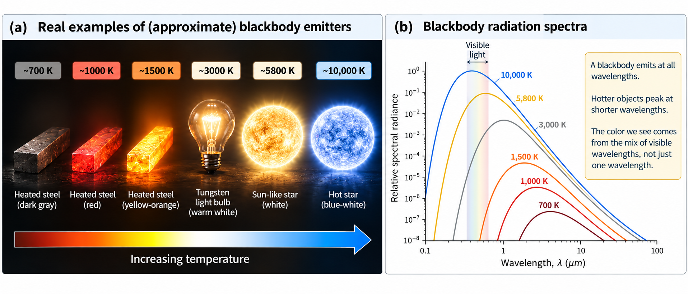
Fig. 13.11 Blackbody radiation and its dependence on temperature. (a) As the temperature of an object increases, its thermal radiation becomes more intense and its visible appearance changes. At \(700\ {\rm K}\), heated steel emits primarily infrared radiation and does not visibly glow. At higher temperatures, the steel begins to glow red and then yellow-orange. A tungsten filament at approximately \(3000\ {\rm K}\) emits warm-white light, while stars at \(5800\ {\rm K}\) and \(10{,}000\ {\rm K}\) appear approximately white and blue-white, respectively. (b) Blackbody radiation is emitted over a continuous range of wavelengths, with the distribution depending on temperature. As temperature increases, the wavelength of maximum spectral radiance shifts toward shorter wavelengths, as described by Wien’s displacement law, while the total energy emitted increases according to the Stefan–Boltzmann law. The shaded region represents visible light. Although each spectrum has a peak wavelength, the color we observe results from the combined visible wavelengths rather than the peak wavelength alone.#
All objects absorb and emit electromagnetic radiation. The rate of heat transfer by radiation is largely determined by the color of the object. Black is the most effective color for heat transfer, where white is the least effective. For example, black asphalt in a parking lot will be hotter than a gray sidewalk on a summer day because black absorbs better than gray. The reverse is also true, where black radiates the energy better than gray.
An ideal radiator is the same color as an ideal absorber, and captures all the radiation that falls on it. In contrast, white is a poor absorber and is also a poor radiator. A white object reflects all radiation like a mirror.
Gray objects have a uniform ability to absorb all parts of the EM spectrum. Colored objects display a particular color in the visible range, while they may also give off special wavelengths in the nonvisible spectrum. For example, the strong absorption of infrared radiation by the skin allows us to be very sensitive to it.
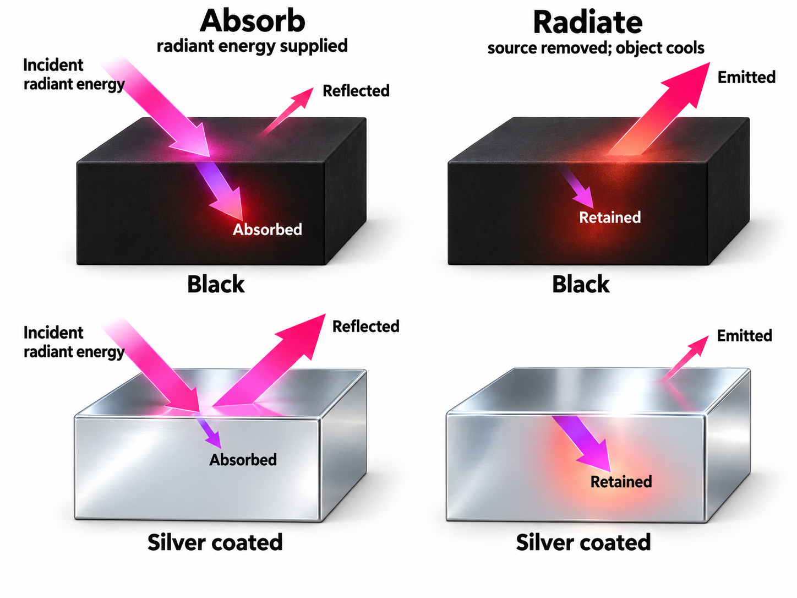
Fig. 13.12 Absorption and emission of thermal radiation by different surfaces. The left column illustrates how black and silver-coated objects respond to incident radiation. A black surface absorbs most of the incoming energy and warms more rapidly, while a reflective silver-coated surface absorbs less energy because most of the radiation is reflected. The right column shows what happens when the external radiation source is removed. A black surface is also an efficient emitter of thermal radiation, allowing it to lose energy and cool more rapidly. In contrast, the silver-coated surface has a lower emissivity and releases thermal energy more slowly through radiation. This relationship illustrates why surfaces that are good absorbers of radiation are also good emitters at the same wavelengths. Adapted from OpenStax, College Physics 2e, Figure 14.26.#
Stefan-Boltzmann Law of Radiation
The rate of energy transfer by emitted radiation is given by the Stefan-Boltzmann law of radiation:
which depends on the Stefan-Boltzmann constant \(\sigma = 5.67 \times 10^{-8}\ {\rm J/(s\cdot m^2\cdot K^4)}\), the surface area \(A\), and the temperature \(T\) in kelvin. The emissivity \(\varepsilon\) of the object is a measure of how well it radiates. An ideal jet-black (or blackbody) radiator has \(\varepsilon=1\), whereas a perfect reflector has \(\varepsilon=0\). Real objects fall between these two values. A tungsten light bulb filament has an \(\varepsilon \approx 0.5\) and a material used in ink toner (carbon black) has the greatest known emissivity of \(\varepsilon \approx 0.99\).
The radiation rate is directly proportional to the fourth power of the absolute temperature. The radiated heat is proportional to the surface area of the object. If you knock apart the coals of a fire, there is a noticeable increase in radiation (heat output) due to an increase in the radiating surface area.
Your skin is a remarkably good absorber and emitter of infrared radiation, having an emissivity of \(0.97\) in the infrared part of the EM spectrum. We are all nearly (jet) black in the infrared, in spite of the variations in skin color. This is the basis for the use of night scopes used by law enforcement and military to detect humans. Thermographs are images used by medical professionals to detect abnormally high temperature regions in the body that can indicate a disease is present.
All objects emit and absorb radiation, where the net rate of heat transfer by radiation (absorption minus emission) is related to the temperature of the object and the temperature of its surroundings. Assume that an object with a temperature \(T_1\) is surrounded by an environment with uniform temperature \(T_2\). The net rate of heat transfer by radiation is given by
which depends on the emissivity of the object alone. The balance of radiation into and out of an object depends on how well it emits and absorbs radiation. When \(T_2>T_1\), the net heat transfer is from hot to cold (or \(Q_{\rm net}/t >0\)).
Problem-Solving Strategy: Methods of Heat Transfer
Examine the physical situation. Determine whether heat transfer occurs through conduction, convection, radiation, or a combination of these mechanisms.
Identify the knowns and unknowns. List the given quantities, determine what must be calculated, and identify any necessary assumptions.
Choose the appropriate equation. The relationship depends on the mechanism involved:
Conduction: Heat transfer through a material is described by
\[\frac{Q}{t}=\frac{kA(T_2-T_1)}{d},\]where \(k\) is the thermal conductivity (see Table 13.4).
Convection: When a fluid moves and changes temperature, the energy transferred can be calculated using
\[Q=mc\Delta T.\]Phase changes: If the fluid undergoes melting, freezing, vaporization, or condensation, use
\[\begin{align*} Q &= mL_{\rm f}, \\ Q &= mL_{\rm v}. \end{align*}\]Radiation: The net rate of thermal radiation is
\[\frac{Q_{\rm net}}{t}=\sigma\varepsilon A(T_2^4-T_1^4),\]where the temperatures must be expressed in kelvin.
Solve symbolically and evaluate. Rearrange the equation for the unknown quantity before substituting numerical values with their units.
Check the result. Verify that the units, magnitude, and direction of energy transfer are physically reasonable.
13.7.1. Example Problem: Net Radiation from a Person#
Example Problem: Net Radiation from a Person
The Problem
A person with skin temperature \(33.0^\circ{\rm C}\) and surface area \(1.50\ {\rm m^2}\) stands in a dark room whose surrounding surfaces are at \(22.0^\circ{\rm C}\). The skin’s infrared emissivity is \(0.97\). Find the net rate of radiative heat transfer into the person. Use \(\sigma=5.7\times10^{-8}\ {\rm W/(m^2\,K^4)}\).
Adapted from OpenStax, College Physics 2e, Example 14.9.
Show worked solution
The Model
We treat the person as a gray emitter surrounded by a much larger enclosure at a uniform temperature. The body emits radiation and also absorbs radiation from the room, so both contributions must be included. We define the net transfer as positive into the body; warmer skin in a cooler enclosure should therefore give a negative result. Absolute temperatures are required by the radiation law.
The Math
The chapter’s notation assigns \(T_1\) to the body and \(T_2\) to the surroundings. Absorption minus emission gives the net rate into the body:
This expression already isolates the requested rate. Converting the temperatures gives approximately \(T_1=306.2\ {\rm K}\) and \(T_2=295.2\ {\rm K}\); retaining the conversion precision internally avoids premature rounding. The numerical rate is
The Conclusion
The net radiative transfer into the person is \(-99\ {\rm W}\), corresponding to a loss of \(99\ {\rm W}\). The negative sign agrees with the warmer body losing energy to cooler surroundings. The magnitude is comparable to resting metabolic power, so radiation can be a significant part of the body’s energy balance even in a dark room.
Check Your Understanding: Radiation after a Temperature Increase
The Problem
A body’s temperature rises from \(20^\circ{\rm C}\) to \(40^\circ{\rm C}\) while its area and emissivity stay constant. Estimate the factor by which its emitted radiation power increases and the percentage increase. Consider emitted power rather than net exchange with the surroundings.
Adapted from OpenStax, College Physics 2e, Check Your Understanding.
Show worked solution
The Model
We compare the emitted powers using the Stefan–Boltzmann law. The same surface area and emissivity appear in both states and cancel in the ratio. Converting the two temperature readings to kelvins is essential because the fourth-power dependence refers to absolute temperature.
The Math
The emitted power is proportional to the fourth power of absolute temperature. Taking a ratio and expressing the relative increase gives
The temperatures are approximately \(293\ {\rm K}\) and \(313\ {\rm K}\). Their ratio gives a power ratio of about \(1.30\), with a working digit retained before evaluating the percentage:
The Conclusion
The emitted power becomes about \(1.3\) times its original value, an increase of approximately \(30\%\). Doubling the Celsius reading does not double the absolute temperature, so it does not produce a sixteenfold increase. The modest change in absolute temperature produces a larger fractional power change because radiation depends on its fourth power.
13.8. In-Class Exercises#
13.8.1. Instructions#
You will use the final 20 minutes of class to begin the problems assigned for that class day. First, you must make a serious attempt on each assigned problem independently. After developing your own approach, you may compare ideas and discuss the problems with other students.
Each student must prepare and submit an individual solution. Organize each quantitative solution using the Problem–Model–Math–Conclusion format. Show your reasoning, equations, substitutions with units, and interpretation of the result. A numerical answer without supporting work is not a complete solution.
Open this page in Google Colab so you can easily copy the problems to the template without retyping them.
Export your completed Jupyter notebook as a PDF and submit the PDF to D2L by 11:59 p.m. CT on the day of class. The PDF filename must follow the format LastName_ChXX_SetY.pdf, where XX is the two-digit chapter number and Y is the problem-set number.
Make your own copy before beginning
A read-only Jupyter notebook template is available on D2L. Before entering any work, you must make your own editable copy of the notebook by selecting Save a copy in Drive.
Changes made directly to the read-only template cannot be saved. It does not matter how much work you enter: if you have not made your own copy, your changes will be lost. Confirm that you can rename and save your copy before beginning the problems.
13.8.2. Problems#
Problem 1
Rubbing your hands together warms them by converting work into thermal energy. If a woman rubs her hands back and forth for a total of 20 rubs, at a distance of \(7.50\ {\rm cm}\) per rub, and with an average frictional force of \(40.0\ {\rm N}\), what is the temperature increase? The mass of tissues warmed is only \(0.100\ {\rm kg}\), mostly in the palms and fingers.
Problem 2
(a) How much heat transfer is required to raise the temperature of a \(0.750\ {\rm kg}\) aluminum pot containing \(2.50\ {\rm kg}\) of water from \(30.0^\circ{\rm C}\) to the boiling point and then boil away \(0.750\ {\rm kg}\) of water?
(b) How long does this take if the rate of heat transfer is \(500\ {\rm W}\)? Recall that \(1\ {\rm W}=1\ {\rm J/s}\).
Problem 3
How many grams of coffee must evaporate from \(350\ {\rm g}\) of coffee in a \(100\ {\rm g}\) glass cup to cool the coffee from \(95.0^\circ{\rm C}\) to \(45.0^\circ{\rm C}\)? You may assume the coffee has the same thermal properties as water and that the average heat of vaporization is \(2340\ {\rm kJ/kg}\) (\(560\ {\rm cal/g}\)). You may neglect the change in mass of the coffee as it cools, which will give you an answer that is slightly larger than correct.
Problem 4
Calculate the rate of heat conduction out of the human body, assuming that the core internal temperature is \(37.0^\circ{\rm C}\), the skin temperature is \(34.0^\circ{\rm C}\), the thickness of the tissues between averages \(1.00\ {\rm cm}\), and the surface area is \(1.40\ {\rm m^2}\).
Problem 5
The “steam” above a freshly made cup of instant coffee is actually tiny water droplets formed by condensation of water vapor that evaporated from the hot coffee. What is the final temperature of \(250\ {\rm g}\) of hot coffee initially at \(90.0^\circ{\rm C}\) if \(2.00\ {\rm g}\) evaporates from it? The coffee is in a Styrofoam cup, so other methods of heat transfer can be neglected.
Problem 6
Find the net rate of heat transfer by radiation from a skier standing in the shade, given the following. She is completely clothed in white (head to foot, including a ski mask), the clothes have an emissivity of \(0.200\) and a surface temperature of \(10.0^\circ{\rm C}\), the surroundings are at \(-15.0^\circ{\rm C}\), and her surface area is \(1.60\ {\rm m^2}\).
13.9. Homework#
13.9.1. Instructions#
Homework assignment
The homework is designed to give you regular practice applying the ideas developed in this chapter. A read-only Jupyter notebook template for the assignment is available on D2L. Before entering any work, you must make your own editable copy of the notebook. Changes made directly to the read-only template cannot be saved, so confirm that you can rename and save your copy before beginning.
There are two types of homework questions:
Conceptual questions: Copy the question into your notebook and answer it under a heading titled The Conclusion. Your response should be a paragraph that directly answers the question and explains the physical reasoning behind your answer. A Model or Math section is not required unless the question genuinely requires a calculation.
Quantitative questions: Copy the problem into your notebook and organize your solution using the Problem–Model–Math–Conclusion format. Identify the physical situation, assumptions, knowns, unknowns, and sign convention in the Model; develop and apply the necessary equations in the Math; and state, interpret, and check your result in the Conclusion. Include units in numerical substitutions.
The worked examples on the course webpage model the reasoning and solution style expected in your homework.
Don’t wait until the night it is due
Homework is much easier to manage when you complete a couple of problems at a time as you work through the chapter. This gives you time to identify concepts that you do not understand and ask questions before the due date. Trying to complete the entire assignment the night it is due usually leaves little time to diagnose mistakes or revisit the course material.
Submission
When your assignment is complete, export the Jupyter notebook as a PDF and submit the PDF to D2L by 11:59 p.m. CT on the due date.
Name your submitted file using the format LastName_ChXX_HW.pdf. Replace LastName with your last name and XX with the two-digit chapter number. For example, homework for Chapter 2 submitted by Jane Smith would be Smith_Ch02_HW.pdf.
Before submitting, open the PDF and make sure that all questions, equations, figures, and solutions are visible and readable.
13.9.2. Conceptual Questions#
Problem 1
In very humid climates where there are numerous bodies of water, such as in Florida, it is unusual for temperatures to rise above about \(35^\circ{\rm C}\) (\(95^\circ{\rm F}\)). In deserts, however, temperatures can rise far above this. Explain how the evaporation of water helps limit high temperatures in humid climates.
Problem 2
When our bodies get too warm, they respond by sweating and increasing blood circulation to the surface to transfer thermal energy away from the core. What effect will this have on a person in a \(40.0^\circ{\rm C}\) hot tub?
13.9.3. Quantitative Questions#
Problem 3
Following vigorous exercise, the body temperature of an \(80.0\ {\rm kg}\) person is \(40.0^\circ{\rm C}\). At what rate in watts must the person transfer thermal energy to reduce the body temperature to \(37.0^\circ{\rm C}\) in \(30.0\ {\rm min}\), assuming the body continues to produce energy at the rate of \(150\ {\rm W}\)? Recall that \(1\ {\rm W}=1\ {\rm J/s}\).
Problem 4
(a) How much heat transfer is required to raise the temperature of a \(0.750\ {\rm kg}\) aluminum pot containing \(2.50\ {\rm kg}\) of water from \(30.0^\circ{\rm C}\) to the boiling point and then boil away \(0.750\ {\rm kg}\) of water?
(b) How long does this take if the rate of heat transfer is \(500\ {\rm W}\)? Recall that \(1\ {\rm W}=1\ {\rm J/s}\).
Problem 5
(a) What is the rate of heat conduction through the \(3.00\ {\rm cm}\)-thick fur of a large animal having a \(1.40\ {\rm m^2}\) surface area? Assume the animal’s skin temperature is \(32.0^\circ{\rm C}\), the air temperature is \(-5.00^\circ{\rm C}\), and fur has the same thermal conductivity as air.
(b) What food intake will the animal need in one day to replace this heat transfer?
Problem 6
(a) Cherry-red embers in a fireplace are at \(850^\circ{\rm C}\) and have an exposed area of \(0.200\ {\rm m^2}\) and an emissivity of \(0.980\). The surrounding room has a temperature of \(18.0^\circ{\rm C}\). If \(50\%\) of the radiant energy enters the room, what is the net rate of radiant heat transfer in kilowatts?
(b) Does your answer support the contention that most of the heat transfer into a room by a fireplace comes from infrared radiation?